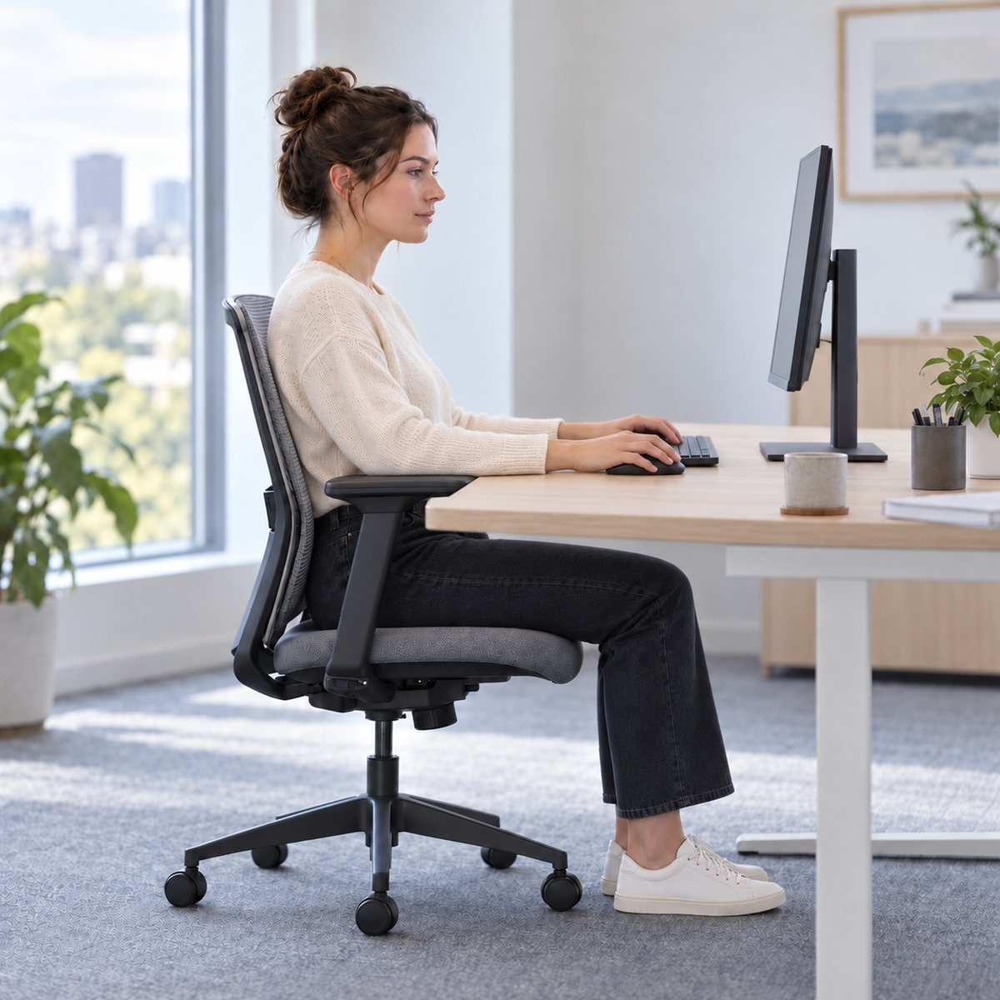

Если вы много работаете за компьютером
В офисе, дома или в гибридном формате и проводите за рабочим местом значительную часть дня.
Рабочее место должно быть адаптировано под вас, вашу рабочую позу и задачи
Если вы много времени проводите за компьютером, эргономика помогает понять, как организовать рабочую позу и рабочее место так, чтобы снизить лишнее напряжение, меньше уставать и дольше сохранять работоспособность.
В большинстве случаев лучше начать с онлайн-курса: разобраться в основных принципах, настроить то, что уже есть, и понять, как выбирать новое оборудование.
Если мебель нужно подобрать уже сейчас, можно начать с подбора эргономичного решения.

В офисе, дома или в гибридном формате и проводите за рабочим местом значительную часть дня.
В спине, шее, плечах, руках или других областях и вы хотите понять, что в рабочей позе или рабочем месте стоит изменить.
И хотите организовать его так, чтобы оборудование не заставляло тело постоянно приспосабливаться к неудобному положению.
Кресло, стол, монитор, подставку, поясничную поддержку и другие элементы лучше подбирать с учетом ваших особенностей, рабочей позы и сценария работы.
Для большинства первый шаг – онлайн-курс. Если оборудование нужно выбирать уже сейчас, можно начать с подбора решения. Индивидуальная консультация – следующий уровень более точной работы.
Разберитесь, как работа влияет на ваше тело, определите подходящую рабочую позу, настройте имеющееся рабочее место и поймите, по каким принципам выбирать мебель и оборудование.
Если вы уже выбираете кресло, стол, поясничную поддержку или другое оборудование, можно начать с подбора решения под ваши задачи и особенности рабочего места.
Мебель и оборудование подбираются с учетом вашей рабочей позы и характера работы, чтобы все элементы рабочего места составляли единую систему.
 03
03
Для более точной настройки вашего рабочего места, проверки результата и учета индивидуальных особенностей вашего тела.
Наиболее эффективно использовать консультацию после знакомства с основными принципами эргономики и самостоятельной настройки рабочего места. Тогда основное внимание можно уделить индивидуальной коррекции и точной настройке.
Универсального «правильного» рабочего места не существует. Одно и то же кресло, высота стола или положение монитора не могут одинаково хорошо подходить всем.
Подробнее о Методе СимкинаВажно понять, какую работу вы выполняете и какие задачи решаете.
Какое положение тела для этих задач наиболее рационально.
Под вашу рабочую позу настраиваются мебель, оборудование и рабочая среда.
Задача эргономики – создать такие условия, при которых более физиологичное и комфортное положение тела поддерживается самим рабочим местом и не требует от вас постоянных усилий.
Для большинства оптимальный первый шаг – пройти онлайн-курс, разобраться в основных принципах и самостоятельно настроить то, что уже есть.
Индивидуальная консультация с Дмитрием СимкинымОставьте номер телефона – перезвоним и ответим на ваши вопросы.
Расскажите коротко о задаче – свяжемся с вами, уточним детали и предложим подходящий формат работы.